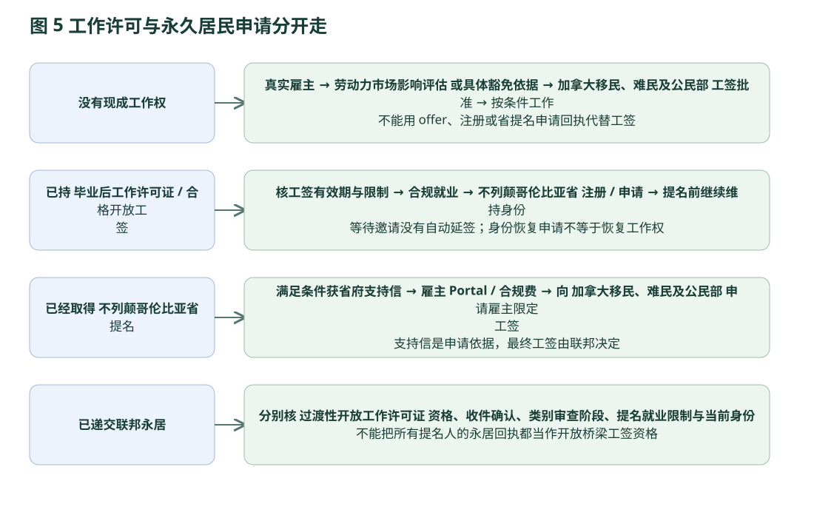

六 从入学到提名
执行时间轴、材料清单和工作授权：每个阶段都能知道下一步要准备什么。
本章按“进入下一阶段前必须证明什么”排时间。3–5 年是规划窗口，不是政府承诺的办理时长；省府处理估计、学校学制和联邦审批不能简单相加成保证日期。
从境外准备到永久居民：线性执行时间轴
- 01 入学前：约 3–12 个月，研究估计
核护照与所在地身份、NOC/执照、语言、课程、资金和学校录取。每一项不通过就调整或停止；不能先付大额不可退学费再研究移民。
- 02 在读：按实际课程时长
维持全日制及合法身份，完成课程和实习。每学期核 PGWP、CIP、目标职业及 BC 政策是否变化；合法学生工作不能一概计入 SW 工作经验。
- 03 毕业与工签：抓住法定期限
完成信、最终成绩单、合资格语言成绩、护照及身份记录齐备；PGWP 通常 180 天内申请。能否立即工作另核联邦条件。
- 04 就业与省申请：没有固定等待期
找到符合要求的真实工作和支持雇主；完成所需执照、SW 经验及其他资格。SW 注册后等待选择，HA 合格者可直接申请。不要人为设定“必定半年获邀”。
- 05 获邀 / 省提名
SI 获邀后一般 30 天内完整提交；材料不全不能靠预约承诺补齐。省提名后遵守证书、工签支持信和联邦申请期限。
- 06 联邦审批与持续合规
IRCC 审核身份、体检、安全、犯罪等；等待期间维持工作授权与提名条件，工作/家庭等重大变化及时报告。持有提名并不意味着已获永久居民。
技能类材料清单：资格必须有文件支撑
| 材料组 | 应准备的证据 | 适用和核对重点 |
|---|---|---|
| 个人与家庭 | 有效护照身份页；现有/既往加拿大许可与身份记录；配偶子女的相关民事证件；必要授权表。 | 核护照有效期、在境外/境内的真实身份及所有受抚养人。 |
| 工作与经验 | 签字 offer / 合同，雇主推荐信（日期、工时、职责、工资与联系方式），工资、税务、许可等辅助证据。 | NOC 按职责；经验年限、全/兼职、Co-op 和合法工作逐段核。 |
| 学历与职业资格 | 毕业证、成绩单；要求时 ECA；牌照/注册，或指南允许情形下监管机构的证据。 | 课程证书不代替职业执照；HCA、牙科助理及其他受监管岗位有专门条件。 |
| 语言 | 认可机构有效考试，四项分数、考试日期、注册和申请时有效性。 | TEER 2–5 或申请分数需要时必交；TEER 0/1 的语言规则不要概括为一律免考。 |
| 工资与家庭收入 | 职位工资工时；若计配偶收入，提供其 BC 工作、工资及合格授权证据。 | 工资符合岗位与地区市场；家庭门槛按人数和地区。 |
| 雇主身份与经营 | 雇主声明、公司注册/经营许可，组织与员工、经营地点及所需行业许可资料。 | 经营满一年、员工人数、真实 BC 场所、招聘、股权关系及行业规则。 |
| 招聘与职位 | 广告与招聘记录、职位说明及给申请人的书面 offer。 | 通常两个可接受渠道、至少 14 天；是否满足例外由具体条件决定。 |
| EEBC 附加 | 有效 EE 档案、求职验证码及符合 FSW/FST/CEC 的证明；所需语言/ECA。 | BC 门槛与联邦门槛同时满足；档案到期或情况变更须处理。 |
| 专项/卫生局 | HA 的支持材料及相应职业资格；临时专项连续 9 个月、直接雇佣、地点和职位证明。 | 外包公司不等于卫生局直接雇佣；普通 HA 与一次性专项材料不能混用。 |
| 文件处理 | 清晰完整文件、要求的签字、非英文材料的认证翻译及原文。 | 以现行在线账户个案清单为最终提交入口；截图不能代替指定表格。 |
这些是按材料用途重组的准备清单，不是门户每个申请人的逐格代填。原始完整清单保存在下方 PDF，可按具体 stream 逐项勾核。申请指南材料表原页 54SW / EEBC 材料原页 57雇主材料原页 59
易漏的时间和费用
| 节点 | 现行规则 / 研究口径 | 操作 |
|---|---|---|
| SI 注册 | 一般有效 12 个月；注册免费。 | 保持资料真实并及时更新，过期需处理。 |
| SI 邀请 | 收到 ITA 后 30 天；申请费 CAD 1,750。 | 提前准备雇主资料、翻译和语言，不等邀请后才找证明。 |
| SI 决定复核 | 境内一般 30 天、境外 60 天；费用 CAD 500。 | 这是决定复核程序，不是无条件补新证据重新申请。 |
| 农村卫生支持临时专项 | 2026-10-07 23:59 为延长后的注册截止。 | 只适用于已满足该专项现有工作、地区等条件的人。 |
| 企业家注册与邀请 | Base / Regional 注册 CAD 300；入池一般 180 天；获邀后 120 天申请；申请 CAD 3,500。 | 语言、社区转介与净资产审查先安排；最低投资不含全部成本。 |
| Base / Regional 抵达与履约 | 按 confirmation letter 起 365 天内抵达；Base 最终报告为工签签发后 550–610 天；Regional 为 366–610 天。 | 用具体支持信与履约协议的日期建立提醒，不能把省官网简表混抄。 |
| Strategic Projects 抵达与履约 | 支持信后 90 天内申请工签、收到支持信 6 个月内抵达；抵达 2 个月内交 Arrival Report；12–24 个月最终报告。 | 与 Base / Regional 的 365 天规则分开。 |
| EI 提名后的联邦申请 | 一般在有效提名的 180 天内。 | 检查证书实际有效期及当前联邦清单。 |
| 政府处理时长 | SI 约 3 个月、EI 省申请/最终报告约 4 个月是公布服务估计，非总移民时间。 | 每次决策重查；等待邀请、补件、学制与 IRCC 不包括在内。 |
工作许可：四种起点分别处理

{kind=link}
一般LMIA employer-specific work permit
省提名支持的LMIA-exempt employer-specific工作许可／T13
BC SI提名后，省可发支持信供申请LMIA豁免工签；之后通过BCPNP Online提出支持信请求，须工签即将到期、在提名到期前已递交PR、继续满足提名条件。材料通常含现行移民记录、按时递交PR证明及最近两期工资单（B8第16至18及27页）。雇主通常先经Employer Portal提交offer，付230加元或证明豁免，提供A加7位数字offer number。IRCC独立决定，提名或支持信本身不是工作许可。
已核实BC提名后支持及联邦offer程序；IRCC T13 operational原页未能访问，T13代码的详细类别例外未独立审计。企业家提名前经营许可不自动视为同一种工签。
Bridging Open Work Permit (BOWP)
一般规则：主申请人在加拿大并具有合资格有效/维持/可恢复身份；PNP提名不得含就业限制。非EE PNP须递交完整PR、通过eligibility assessment且有AOR；AOR本身不表示BOWP开始处理或必然可批。EE申请依该页EE专门条件及完整性审查。不能只凭registration、ITA或省提名证申请BOWP。
可能有时限性operational例外必须另核官方原文，本章未确认2026临时AOR豁免，不能写一概豁免。
Maintained status（维持身份）
符合条件在工签到期前递交延长申请、并留在加拿大，可依原许可条件等待；雇主限定许可不能因此随意换雇主。省提名/PR递交本身不能延长临时身份或产生工作权。
企业家材料：先核资产来源，再核履约
| 阶段 | 材料和准备 |
|---|---|
| 登记 | 护照资料及签字页、照片、适用的代表授权；Regional另有有效社区转介与语言报告，Base如要求语言分须成绩。 B1/B2第3.2B1/B2第3.2 |
| 净资产及资金来源 | IMM Schedule4A及财富积累叙述；本人及配偶最近2年个人税单、每个银行账户最近2年月结单且相同截止日；定存/股票/养老金/保险退保值/贷款信用卡证据。房产证、购房协议、两年内认证评估、按揭及租金；赠与/继承/和解及转账、赠与人能力与死亡/遗嘱等适用证据。企业股权、工商/税务登记、股东名册、资本变动、工资红利、近2年审计财报与公司税单；会计师可加要材料。 B3第5章 |
| 个人及经营经历 | 本人及家属护照与居住国合法身份；出生、结婚/离婚等民事文件；学历及成绩单；最近10年（Regional5年）雇主/自有企业证明，写职务、责任、期间、薪金、奖金红利佣金及签字人联系方式；银行签字权、企业牌照、宣传材料；考察机票/酒店/照片；加拿大经历的许可、T4/NOA等。适用配偶IMM5406/IMM5669。 B3第6章 |
| 商业计划 | 完整经营模式、市场与竞争、管理及招聘、合资格投资和资金来源、实施进度及财务预测，附证据；收购企业的五年经营与产权、牌照、尽调/估值、扩张说明；加盟授权/披露，合伙人履历与安排等。 B3第3/4章 |
| 翻译与文件 | 非英文文件须认证翻译并附原文；净资产审查部分明确原文副本及译文公证。PDF上传最多50附件、每个3MB是当前链接指南要求，最终提交仍以门户现行格式为准。 B3第5/6章 |
| 最终履约 | CPA review-engagement财报、实际投资付款与来源、营业许可证/租约/所有权、工资及持续雇佣、员工公民/PR身份、实际居住和旅行记录等；最终清单以Post-Arrival Guide及协议为准。 B1/B2第3.5；详细Post-Arrival附件清单本子任务未逐条核审。B1/B2第3.5；详细Post-Arrival附件清单本子任务未逐条核审。 |
语言、翻译/公证、ECA（被要求时）、授权净资产审查、CPA经营财报、商务考察、投资、生活成本；IRCC工签/PR及家属/生物识别另计。最低投资不是家庭总预算。
6.1 首次咨询资料清单
- 护照、年龄、婚姻和家庭人数；现在位于中国、第三国还是加拿大；各段居留身份及到期日。
- 从高中起学历、完整成绩、专业、学制和授课方式；既有加拿大留学和 PGWP 使用记录。
- 每段工作按日期、每周工时、工资、真实职责、地点和合法授权列出，不能仅提供职位名称。
- 英语/法语逐项成绩及考试日期；未考试者先做诊断，不把自评当作 CLB。
- 可用资金、来源、债务与家庭生活预算；企业家另列净资产及经营/管理经历。
- 加拿大 offer、雇主、行业、注册和执照、对省提名支持的书面态度。
- 健康/犯罪/拒签/身份中断等可能影响准入的信息单独核查；涉及复杂法律问题应升级给合资格专业人士。
- 形成一页差距表：已满足／缺文件／缺资格／等待开放／不适用，并为每项指定复核来源及下一次检查日期。